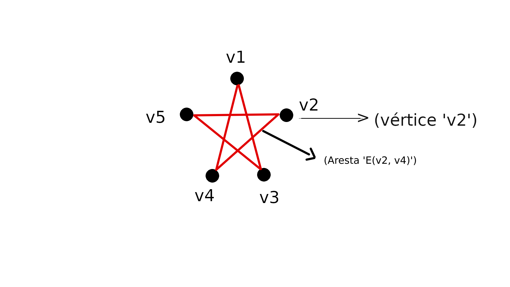

Caminhos Euler
Os caminhos de Euler se tratam de seguimentos de arestas que não se repetem, porem, os vertices podem ser repetidos, e segundo (BRITO, 2014) um Grafo Euler com um único vértice e também um caminho. Para melhor compreensão atente-se na figura 3.1.

Note que esse caminho Euler e um dos mais comuns que existem, muitas crianças quando querem aprender a desenhar uma estrela, fazem desse modo, onde o caminho feito e {v2, v5, v1, v4, v2}. Note que o vértice v2 se repetiu e que o grafo tem vértice de grau par, portanto e um caminho euleriano valido, pelo fato dele terminar com o mesmo vértice e chamado de "ciclo" ou então de "caminho fechado".
Para que um grafo seja nulo, deve-se possuir apenas um vértice (BRITO, 2014), como demonstramos na figura 3.2. Já um grafo pode-se dizer completo quando todos seus vertices são adjacentes, como os da figura 3.3, ou seja, possuem conexão com todos os outros vértices.
Um caminho Euler pode ser utilizado para fazer-se mapeamentos isomórficos (OLIVEIRA). Mostramos isto na figura 3.4 onde o caminho feito é {v1, v4, v3, v2, v5} como podemos ver segundo as setas. Nota-se que apesar de existir uma adjacência entre os vértices v1, v5 e v3, eles não realizam um caminho diretamente. E como v1 e v2 não são adjacentes não é possível criar um caminho entre eles.
» Teorema para cortar caminho entre vértices
Considerando M um grafo em que a matriz de adjacência K utiliza os vértices em ordem do tipo: v1, v2... vn. A quantia de caminhos possíveis N de vi para vj, em que N é um inteiro positivo, é igual a k(i, j) entrada da matriz k^n (OLIVEIRA). No exemplo da figura 3.5 nós iremos ver as possibilidades para ir do vértice V1 ao V3.
A matriz ficaria assim:
» Circuito Euleriano
Para ser feito um circuito euleriano, deve-se primeiramente montar um grafo euleriano, fazendo as conexões de forma que visite todos os vértices, de forma que ao final, retorne ao primeiro vértice utilizado. Portanto vale relembrar que para ter-se um grafo euleriano é necessário que os vértices sejam de grau par.Então, um caminho nulo pode ser também um circuito, pois veja na figura 3.7.
Note que se como possuímos um vértice de grau par, podemos partir do v1 em direção da a1, fazendo o retorno e indo diretamente para a2 de forma direta, seguindo um caminho de forma cíclica.
Portanto, retornando o problema da cidade de Königsberg, o caminho feito seria o da imagem 3.8, e como não há um vértice de grau par acaba não sendo um grafo euleriano, então não é também um circuito euleriano, o que torna o problema sem solução.
A única condição de um multigrafo conectado possuir um caminho euleriano porém não ser circuito, é somente se possuir exatamente 2 vértices de grau impar, como mostra a figura 3.9.